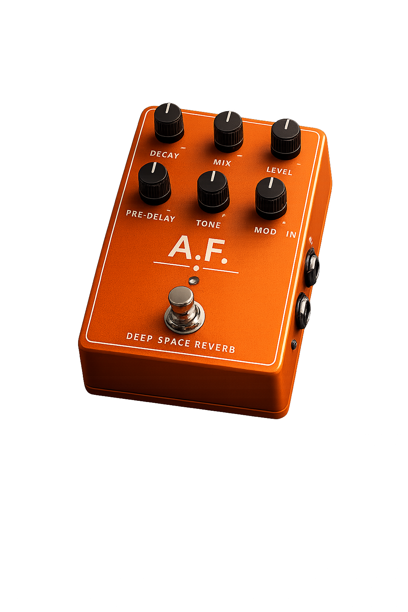

Ingegnere Elettronico
Alberto
Felchero
Elettronica per Strumentazione Audio
Credo che ogni musicista abbia un'identità sonora unica.
Per questo progetto strumenti audio insieme a chi li suona,
unendo ingegneria e ricerca del
suono.
Perché applicare l'ingegneria alla musica
La musica è una delle forme d'arte più potenti nel trasmettere emozioni, identità ed esperienze personali.
Applicare l'ingegneria alla musica significa trasformare tecnologia ed elettronica in strumenti capaci di migliorare il modo in cui le persone esprimono sé stesse, vivono un'esibizione o si connettono emotivamente attraverso il suono.
Il mio obiettivo è progettare dispositivi che non siano semplicemente funzionali, ma che contribuiscano al benessere creativo ed emotivo di chi suona e di chi ascolta.
Per musicisti che vivono il suono come identità
Il mio progetto si rivolge a musicisti, chitarristi e producer che vivono il suono come parte della propria identità artistica e che desiderano strumenti capaci di rappresentare davvero il loro modo di fare musica.
In particolare, voglio aiutare artisti alla ricerca della massima espressività sonora, offrendo dispositivi progettati attraverso dialogo diretto, personalizzazione e ricerca continua del suono.
Il mio approccio
Personalizzazione sonora
Ogni musicista ha un modo unico di vivere il suono. Per questo ogni dispositivo deve poter dialogare con il suo stile, non limitarlo.
Co-design con il musicista
Il prodotto nasce dal confronto diretto con chi lo utilizza, attraverso ascolto, feedback e sviluppo condiviso.
Ricerca del suono
L'obiettivo non è solo costruire un circuito, ma dare forma a un'identità sonora autentica e riconoscibile.
Affidabilità live e studio
Uno strumento audio deve essere espressivo, ma anche solido, pratico e affidabile in ogni contesto.
Cosa faccio
Progetto dispositivi audio ed effetti per chitarra lavorando a stretto contatto con i musicisti. Trasformo esigenze reali in strumenti personalizzati, sviluppando prototipi, conducendo test, iterando le soluzioni fino a trovare il suono giusto.
Non mi limito a costruire un prodotto: creo valore attraverso strumenti che diventano parte integrante dell'identità musicale dell'artista.

Cosa cambia con un approccio su misura
- Molti pedali finiscono per suonare tutti allo stesso modo.
- Molti prodotti sembrano pensati per il mercato di massa.
- Vorrei più libertà nel costruire il mio suono.
- I setup complessi mi fanno perdere tempo prezioso.
- Mi manca un rapporto diretto con chi sviluppa questi strumenti.
- Dispositivi sviluppati insieme ai musicisti.
- Approccio focalizzato sulle esigenze artistiche reali.
- Personalizzazione sonora e sviluppo su misura.
- Setup più intuitivi, essenziali e funzionali.
- Relazione diretta, feedback continuo e co-design.
Dove ingegneria e musica si incontrano
Attraverso la progettazione di dispositivi audio personalizzati, la ricerca sonora e il rapporto diretto con il musicista, il progetto riesce a trasformare i bisogni e le difficoltà della user persona in un'esperienza musicale più autentica, intuitiva e personale.
Il risultato finale non è semplicemente un prodotto elettronico, ma uno strumento costruito attorno alla sensibilità artistica del musicista e capace di diventare parte integrante della sua espressività.
Costruiamo insieme il tuo suono
Se sei un musicista, un producer o un artista alla ricerca di strumenti audio più personali, possiamo iniziare da una conversazione.